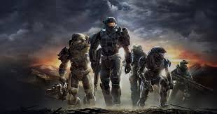
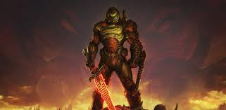

Un videojuego de acción es un videojuego en el que el jugador debe usar su velocidad, destreza y tiempo de reacción. Entre los diversos géneros de videojuegos, el género de acción es el más amplio y abarcativo, englobando muchos subgéneros como videojuegos de lucha, videojuegos de disparos en primera persona, beat 'em ups y videojuegos de plataformas.
Muy a menudo, los videojuegos de acción usan la violencia como su principal característica de interacción, más específicamente el combate con armas de fuego o cuerpo a cuerpo.
Ejemplos
 
Si bien los objetivos de estos videojuegos varían de videojuego a videojuego, generalmente implican avanzar a través de niveles, eliminando hordas de enemigos y resolviendo problemas. Muchos videojuegos incluyen uno o más "jefes", a veces precedidos por "minijefes". Un minijefe es generalmente el clímax hacia un nivel o serie de niveles, con un jefe al final del juego o periódicamente por el juego, llevando a un "jefe final", el cual derrotar es el objetivo principal.
Para derrotar jefes se suele usar el "reconocimiento de patrones" y la velocidad de reacción física. En la mayor parte de los videojuegos viejos (e inclusive algunos modernos) los jefes son programados con un patrón de ataques simple o con movimientos que el jugador aprende a través de la experiencia. Estos patrones simples a menudo abarcan "combos" que exigen al jugador saltar, esquivar o bloquear ataques para luego atacar en ciertos puntos claves, todo esto mientras se maneja el tiempo de los patrones para poder atacar.